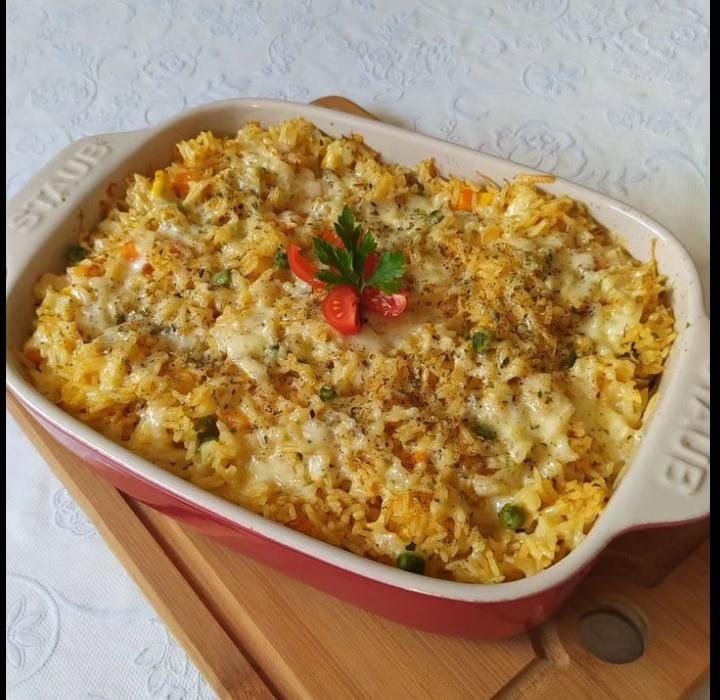
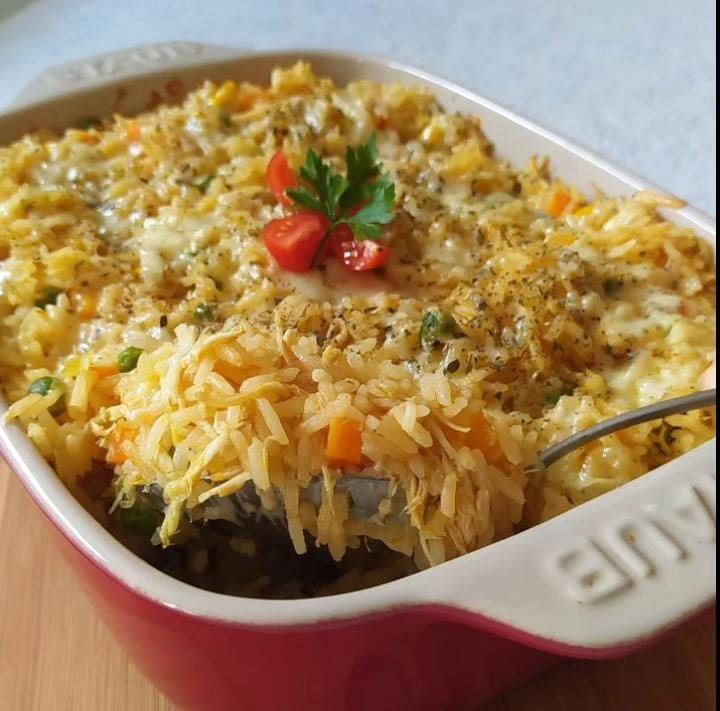

Arroz de forno à parmegiana
Arroz de forno à parmegiana
Ingredientes:
2 ovos
100 g de presunto picado
4 colheres (sopa) de azeite
2 xícaras de arroz
1 colher de extrato de tomate
2 tabletes de caldo de galinha
3 colheres (sopa) de queijo ralado
100 g de mussarela picada
3 tomates sem pele
Modo de preparo
Bata no liquidificador o extrato e os tomates, com um pouco de água e um tablete de caldo de galinha (dissolvido em um pouquinho de água quente).
Cozinhe o arroz com 1 tablete de caldo e 4 xícaras de água por 15 minutos.
Bata os ovos, o queijo ralado, o presunto, a mussarela e misture com o arroz.
Coloque num refratário com o molho forrando a forma e cobrindo com ele.
Leve ao forno quente a 180° C por 10 a 15 minutos.
Abaixo algumas imagens e um vídeo para acompanharem
 